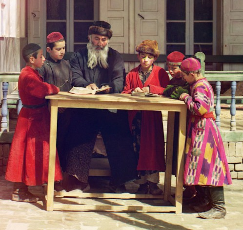

בית משיח חושף לראשונה פרטים של פרשיה לא־ידועה, שבסופה נרתם הרבי מה״מ לסייע בכריכ
בית משיח חושף לראשונה פרטים של פרשיה לא־ידועה, שבסופה נרתם הרבי מה״מ לסייע בכריכת אלפי ספרי נביאים מתורגמים לבוכרית ובהפצתם בקרב בני העדה בארה״ק >> הפרשה החלה לפני כמאה ועשר שנים, ממשיכה בעליה מרוסיה בשנות ה־ל׳, ומסתיימת ר בחבילת ספרי נביאים שהתגוללו בחוצות
בית משיח חושף לראשונה פרטים של פרשיה לא־ידועה, שבסופה נרתם הרבי מה״מ לסייע בכריכת אלפי ספרי נביאים מתורגמים לבוכרית ובהפצתם בקרב בני העדה בארה״ק >> הפרשה החלה לפני כמאה ועשר שנים, ממשיכה בעליה מרוסיה בשנות ה־ל׳, ומסתיימת ר בחבילת ספרי נביאים שהתגוללו בחוצות

ספר ישעיהו בכריכה כחולה מהוהה ומכותמת, היה מונח בראש ערימת ספרים, בתוך קרטון, בחזית בית הכנסת הבוכרי בנחלת הר חב”ד. הספרים בקרטון כללו בעיקר סידורים וחומשים בלויים, לאחר שמאן–דהוא הניחם במקום לזיכוי הרבים - כל הרוצה יטול. שם פגשתי לראשונה את ספר ישעיהו האמור - לא מראה שגרתי של ספרי נ”ך. מתוך סקרנות פתחתי את הספר, ובמבוא המיוחד הופתעתי לראות הסבר מעט מורכב על הספר שנדפס לפני שנים רבות, ולאחר מכן נכרך בסיוע הרבי מה”מ, והרב רפאל חודדייטוב.
מילים אלו סיקרנו אותי יותר והתחלתי לברר אצל יוצאי עדת בוכרה, כמו גם אצל צאצאי הרב חודדייטוב, והבנתי שמדובר בפרשה שאינה מוכרת לציבור. במקביל בדקתי ספרים דומים בסדרה, חלקם נמצאו יחד עם ספר ‘ישעיה’ בקרטון, וחלקם איתרתי במקומות אחרים. לאחר תחקיר מורכב, נפרשה לפניי פרשה מרתקת, ממנה עולה כי בימים אלו לפני ארבעים שנה, השתתף הרבי בהפצת ספרי הנביאים בבוכרית.
מי שחתום על ההוצאה לאור, הוא הרב דוד יהודיוף, חתנו של הבבא סאלי. מכיון שבכתובים לא מצאתי כל קשר בינו לבין ליובאוויטש, לא הבנתי כיצד זכה לקבל את עזרתו של הרבי להפצת הספרים. שיערתי אפוא כי בסיוע חברו הרב חודיידטוב שמר על קשר עקיף עם הרבי ואף זכה כנראה לקבל ממנו סיוע כספי.
בשלב מסוים יצרתי קשר עם בנו הרב יעקב יהודיוף שליט”א, ממנהלי מוסדות ‘מדרש דוד’ בירושלים, בנו של הרב דוד זצ”ל, והוא סיפר לי מזכרונו, כי זכור לו היטב הקשר של אביו עם הרב חודיידטוב והפצת הספרים בבוכרית. ואז חשף בפניי תגלית: “זכור לי לא מכבר שראיתי טיוטת מכתבו של אבא לרבי, ובו הוא מבקש חסות לספרי הנביאים בבוכרית”.
בימים הבאים העביר לי הרב יהודיוף את טיוטת המכתב אלי, וגם שפך מעט אור על הקשר שבין אביו ובין הרבי.
עם המידע החדש, ולאחר חקירה ודרישה נוספת, קיבלה הפרשיה מימד שונה לחלוטין.
המתרגם נפטר
סיפרו של ספר הנביאים בעל הכריכה הכחולה, זה שתורגם לבוכרית שפגשתי לאחרונה, החל למעשה כבר לפני יותר ממאה שנה. תרגום ספרי הנביא נעשה על ידי הרב שמעון חכם, שהחל במלאכת הקודש להביא את דבר ה’ ודברי הנביאים אל עדת ישראל דוברי השפה הבוכרית אשר בארץ הקודש; כאלה שלא הבינו את לשון הקודש כדבעי. גם להם מגיע ללמוד את ספרי היסוד היהודיים - ספרי הנביאים.
כשהסתיימה המלאכה, טרח רבי אברהם אמינוף, מחשובי רבני עדת בוכרה בירושלים, להביאם לדפוס. מלאכת ההדפסה החלה לפני 110 שנים, בשנת תרס”ז, ובקצב של השנים ההן, הסתיימה המלאכה בשנת תרע”ה. בשנים אלו הודפסו ארבעה כרכים בלבד, ובהם ספרי: יהושע–שופטים, שמואל א–ב, מלאכים א–ב, וכן ספר ישעיהו.
מלאכה זו נפסקה פתאום עם פטירתו של המתרגם הרב שמעון חכם ביום י’ שבט תר”ע. עם זאת, הספרים שהספיק לתרגם הודפסו לאחר פטירתו, ונמכרו בקרב יהודי בוכרה בארץ הקודש ומחוצה לה.
בעיצומה של ההוצאה לאור, קיץ תרע”ד, פרצה מלחמת העולם הראשונה שהורגשה היטב גם בארץ הקודש. מאורעות המלחמה גרמו להפסקת תהליך ההדפסה וההפצה, וכך נותרו אלפי ספרי נביאים במחסני העדה הבוכרית בירושלים, מודפסים אך ללא כריכה. מאז, במשך שנים רבות נותרו הספרים במחסנים כאבן שאין לה הופכין.
במקביל להדפסת הנ”ך, הדפיס הרב אמינוף ספר הלכה לעדת בוכרה בשם “ליקוטי דינים”, ואף הוא תורגם על ידי הרב שמעון חכם. גם מספרים אלו נשארה כמות ספרים במחסנים.
המחסנים נפתחים
במהלך מלחמת העולם הראשונה פרצה המהפכה הקומוניסטית ברוסיה, ומאז העליה לארץ הקודש הפכה לבלתי אפשרית. כיוון שכך, לא היה עוד ביקוש של ממש לספרים שתורגמו לשפה הבוכרית. כך נותרו אלפי הספרים מיותמים במשך כשבעים שנה!
המצב השתנה בשנות ה–ל’, כאשר החלה עליה גדולה מברית המועצות, או אז יצאו אלפי יהודי רוסיה מעמק הבכא. שוב הגיעו לארץ הקודש יהודים בני עדת בוכרה שהתגוררו עד אז בערים טשקנט, סמרקנד, בוכרה וערים נוספות ברפובליקת אוזבקיסטן. אלו חוללו תחיה בקרב הקהילה הבוכרית בארץ ישראל. שוב נוצר צורך בספרות קודש מתורגמת לבוכרית, אך כזו לא הייתה בנמצא.
בעקבות הביקוש מחד, והמחסור מאידך, הסכימו האפוטרופסים של הקדשי העדה הבוכרית לפתוח את המחסנים ואפשרו את הפצת הספרים שהודפסו שנים רבות קודם לכן. מי שניהל את מבצע הכריכה וההפצה, היו הרב דוד יהודיוף חתנו של הבבא סאלי והרב רפאל חודיידטוב, מחשובי חסידי חב”ד בסמרקנד, שאף הוא עלה באותה תקופה לארץ הקודש ועסק רבות למען חיזוקם הרוחני של בני עדתו, בעידודו של הרבי.
על הקשר בין הרב דוד יהודיוף לרב חודדייטוב, מספר בנו הרב יעקב יהודיוף: “לאבא היה קשר הדוק עם הרב רפאל חודדייטוב שהיה אורח תדיר בבית הוריי. כאשר היה צורך, לן אצלנו בבית. מאותם ימים זכורים לי היטב סיפוריו על המסירות נפש בבוכרה בזמן הקומוניסטים”.
הפצה בכל דרך
פרשיית הפצת הספרים בבוכרית, לוטה בערפל. מחוסר מידע, היו שציירו את הפרשיה בגוונים שונים. במספר מקורות צויין שספרים אלו שהופצו בשנים תשל”ו–תשל”ז, הם “מהדורת צילום”. כלומר, מהדורה זהה למהדורה הישנה. אך מעדויות של בני משפחות חודדייטוב ויהודיוף, ברור כי מדובר בספרים המקוריים שהמתינו עשרות שנים ליד גואלת.
מספר הרב משיח חודדייטוב, בנו של הרב רפאל: “אני זוכר היטב כיצד אבא דאג לכרוך את הספרים ולהפיצם בקרב העולים מבוכרה. אבא לא עסק בהדפסת ספרים אלו אלא רק בכריכתם. אלו שכתבו על הספרים שהודפסו בשנות הל’ כמהדורת צילום, הסיקו זאת מעצמם”.
מוסיפה אחותו, מרת רבקה שופט: “אני זוכרת היטב את בית ההורים גדוש בספרים אלו שנכרכו על ידי אבא, אך תורגמו במקור על ידי הדוד הגדול שלו הרב שמעון חכם”.
בספר “אתם שלום” בו מסופר על תולדותיו ופועלו של הרב חודיידטוב, ישנה סקירה קצרה על מבצע הפצת ספרי הלכה, שירה ומגילת אסתר כשהם מתורגמים לבוכרית. מעניין כי דווקא ספרי הנביאים לא נכללו בסקירה זו:
“עם הגעתו ארצה, הירבה ר’ רפאל לעסוק בהדפסת ספרים רבים שחיברו חכמי בוכרה. אחד מהם הוא הספר ‘ליקוטי דינים’ (מעין קיצור שולחן ערוך בשני חלקים) שחיבר רבה הראשי של העדה הבוכרית בישראל, הרה”ג רבי אברהם אמינוף זצ”ל, מגילת אסתר בשפה הבוכרית, בחרוזים, מאת המשורר רבי מולאנה שאהין זצ”ל […] ספרי שירה ופיוט חשובים שחיברו בשעתם גדולי סופרי ומשוררי יהדות בוכרה, ובהם דודו זקנו רבי שמעון חכם זצ”ל ועוד.
השתדלות זו של ר’ רפאל זכתה לעידוד רב מצד הרבי. באגרת קודש מיום כ”ו באדר שני תשל”ו כתב לו הרבי: “זה עתה נתקבל הספר תפסיר [פרשנות] האיגרות של הגאונים ות”ח ת”ח”.
וכך סיפר העסקן החב”די מעדת בוכרה, הרב יוסף לדיוב ע”ה, על חלקו בהפצת ספרי “ליקוטי דינים” שנכרכו מחדש בשנת תשל”ו: “אחד הדברים שר’ רפאל דירבן אותי מאוד לעסוק בהם, היה חלוקת ספרי ההלכה לעולי בוכרה, ביניהם קיצור שולחן ערוך בתרגום לבוכרית שהודפס לפני למעלה ממאה שנה על ידי אחד מחכמי העדה הבוכרית. מאות עותקים של ספר זה שכבו במחסנים כאבן שאין לה הופכין. בקהילה הבוכרית בירושלים איש לא השתמש בספרים העתיקים והמיושנים האלה, אבל ראשי ועד הקהילה לא רצו להוציא את הספרים מתחת ידם בחינם.
“ר’ רפאל החליט להפעיל קשרים דרך העסקנית הגב’ שולמית תילאיוף מרחוב בעלי מלאכה בתל אביב, שהיתה קרובת משפחתו וחברת ‘ברית יוצאי בוכרה בישראל’. פעמים מספר לקח אותי ר’ רפאל איתו לביתה כדי להשפיע עליה שתדאג לכך שהוועד הארצי יאפשר להפיץ את הספרים. אני המתנתי באחד החדרים בביתה, והוא ישב ודיבר איתה שעות ארוכות עד שסיכם איתה את כל פרטי הענין. תחילה נתנו לכך אישור עקרוני, אך התנו זאת בתשלום מסויים. ר’ רפאל המשיך להתעקש ולהילחם עד שהתקבלה ההחלטה לחלק את הספרים לעולים החדשים, חינם אין כסף. לאחר מכן המריץ אותי ר’ רפאל כמה פעמים שאסייע לו בחלוקה. הוא היה אדם תקיף ונחרץ, ולחץ עליי לנטוש עיסוקים חשובים אחרים לטובת הוצאת הספרים מהמחסנים וחלוקתם בין בני העדה.
“לקחתי מכונית גדולה של ‘חמ”ה’ ונסענו לירושלים, שם הוצאנו מאות ספרים מהמחסן, העמסנו אותם על רכבנו ויצאנו לחלקם בבתי כנסת ובבתים פרטיים, בריכוזי העולים ברחבי הארץ.
“באחד הימים, הרכב הרגיל שלי היה בשימוש אצל אחד מפעילי ‘חמ”ה’, ור’ רפאל האיץ בי להשיג רכב חלופי ולצאת לדרך. ברוב חפזוני לא לקחתי איתי את רישיון הנהיגה שלי וכן לא את ביטוח הרכב, וכך יצאנו לדרכנו. באחת התחנות חניתי על מדרכה, וכשחזרתי, ראיתי שהרכב איננו. התברר כי הרכב נגרר מהמקום על ידי פקח. עצרנו מונית ונסענו אל מגרש המכוניות הגרורות, שם התבקשתי להציג רישיון רכב וביטוח רכב, אך הם לא היו ברשותי. תודות לתושייתו של ר’ רפאל, הצלחנו כעבור שעה קלה לקבל את המכונית בחזרה לידינו.
“כך זכינו להפיץ בין העולים מאות רבות של ספרי הלכה מתורגמים לבוכרית. אילולא מאמציו ונחישותו של ר’ רפאל, סביר להניח שהספרים הללו היו מוסיפים לצבור אבק במחסני ועד הקהילה בירושלים”.
“נכרכו הספרים בעזרת כ”ק אדמו”ר מליובאוויטש”
לאחר הפצתם של ספרי ההלכה, ביקש הרב חודיידטוב לכרוך ולהפיץ גם את ספרי הנביאים, אלא שכריכת הספרים הגיעה לכדי סכום נכבד. כדי להשיג תרומה נכבדה לספר, הוחלט לפנות ישירות לרבי.
הבקשה לרבי נכתבה בחודש חשון תשל”ז, באגרת מיוחדת שכתב הרב דוד יהודיוף. טיוטת האגרת נמסרה לפרסום לראשונה ב’בית משיח’, על ידי בנו הרב יעקב יהודיוף [מפאת השנים הרבות שחלפו, המסמך מטושטש, ועיקרי הדברים פוענחו]:
האגרת נכתבה על בלנק, של “קהילת עדת היהודים הבוכרים, ירושלים ישראל”.
לכבוד מעלת קדושת אדמו”ר מנחם מ. שניאורסון שליט”א
אדמו”ר מאוד נכבד!
אחדשה”ט, כיאה ויאות למעלת רום מעלתו, כת”ר, הריני לבקשו בבקשה כללית לטובת עדתנו עדת הבוכרים.
כאן מפרט הכותב על מלאכת תרגום התנ”ך על ידי עדת הבוכרים באמצעות הרבנים הרב אברהם אמינוף והרב שמעון חכם אלא שבשלב מסוים הספרים לא זכו לשזוף אור עולם: “מפאת מלחמת העולם הראשונה, נשארו במחסני ועד העדה כארבעת אלפים ספרים מהנזכר לעיל, מכל נביא כאלף ספר מודפסים אבל בלי כריכה, כאשר עיני צדיק תחזינה מישרים, בספרים אשר נשלח לו.
עם גל העליה הגדולה מבוכארה, אשר זיכנו בחסד ה’ שעלו כשלושת אלפי משפחות, אשר ספרים אלו בודאי יועילו להם מאוד בהחדרת תורה ויראת שמים, באשר יקראו בהם ויבינו את מה שכתוב, התעוררנו בזה ודיברנו עם אנשי ועד העדה לחלקם ולהפיצם בן העולים, בחינם אין כסף, כדי לזכות את הרבים. אך דא עקא כי כריכת הספרים, וההוצאות הכרוכות בזה, יעלו כ–35 אלף [כנראה לירות], ובשיחתי עם האי גברא רבה ויקירא וכו’ כמוהר”ח רפאל כודדיאטוף הי”ו, ובפקודת הר”ר שמחה גורודצקי שליט”א, שליח אדמו”ר שליט”א לבוכארא, הציע לבקש את עזרתכם הכספית כדי לכרוך את הספרים הנ”ל ולהפיצם בישראל בלי כסף ובלי מחיר, ולא ישארו גנוזים ככלי אין חפץ בו, בו בזמן שהקהל הקדוש צמאים לדבר ה’.
נא בבקשה עשה נא לכבוד התורה הקדושה והנביאים וצווה לאנ”ש לתרום ולהתרים את הסכום הנ”ל וישלחו לנו את הכסף באמצעות הר”ר שמחה גורודצקי הנ”ל, כדי לגמור את הענין בשעה טובה ויפה, שעה אחת קודם, ולזכות את הרבים וזכות הרבים תלוי בו.
ולתשובתו המהירה אנחנו מחכים, ובעזרת ה’, חפץ ה’ בידינו יצליח,
החותם ביקרא דאורייתא
דוד יהודיוף
כאן חסר לנו מידע, כיצד הרבי סייע בפועל בעניין זה, אך מתוך המבוא לספרי הנביא, נראה כי הרבי נענה לעזור כלכלית לכריכת הספרים שיצאו לאור בי’ שבט, כשלושה חודשים לאחר ששוגרה האגרת לרבי. וכך מובא במבוא לספרי הנביאים שנכרכו בסיוע הרבי:
בס”ד. י’ שבט התשל”ז
יומא דהילולא של אדמו”ר יוסף יצחק נבג”מ
ויומא דהילולא של המתרגם מוהר”ר שמעון חכם זצ”ל
בשבח והודאה להקב”ה ובשמחה רבה, עלה בידינו להוציא לאור תעלומה, חמדה גנוזה זה למעלה משבעים שנה, ספרי הנביאים עם תפסיר [תירגום], פעולת רבותינו ומאורינו, הלא הם: הרב הגאון מוהר”ר שמעון חכם זלה”ה אשר תירגמם לשפה הפרסית המדוברת בין קהל עדתינו עדת יהודי ‘בוכארא’ ואשר הודפסו בזמנו בהשתדלות הרה”ג אברהם אמינוף (תלמודי) זלה”ה רב העדה בירושלים, ובתמיכת בני העדה כמבואר מעבר לשער הספר.
כיום שזכינו בחסד ה’ לעליה הגדולה מערי ‘בוכארא’ אשר תרגום זה יועיל להם מאוד להבין דברי הנביאים. נאותו אפוטרופסי הקדשות העדה הבוכרית בירושלים לחלקם ביעקב ולהפיצם בישראל חינם אין כסף.
בהיות הספרים שנשארו אינם מכורכים, נכרכו הספרים בעזרת כבוד קדושת אדמו”ר מנחם מענדל שניאורסון שליט”א, אדמו”ר חב”ד, וכבוד מ”ו רפאל כודידאטוף הי”ו […כאן מפורטים שמות קרובי משפחת חודיידטוב לעילוי נשמתם הקדיש זאת רבי רפאל]
המשתדלים:
דוד יהודיוף, רפאל כודידאטוף.
ספרים אלו הופצו בין העולים הבוכרים, ובודאי גרמו לרבים מהם להגות בדברי הנביאים ולהתחזק באמונת ה’.
“לאבא, הרב דוד יהודיוף, היתה הערכה עצומה לרבי”, מספר בנו. “אבא דיבר תדיר על גדולתו של הרבי, הילל ושיבח את פועלו. זכורני בשנת תנש”א בערך, נסעתי לארצות הברית, ואבא ביקש ממני ללכת בשמו אל הרבי, למסור פרישת שלום ולבקש ברכה עבורו. כאשר הגעתי לניו יורק, קיימתי את מצות אבא, ובאתי לחלוקת דולרים ביום ראשון. כאשר עברתי בפני הרבי, הציגו אותי, קיבלתי דולר, ושכחתי למסור פרישת שלום מאבא. לאחר שקיבלתי דולר, התקדמתי ואז לפתע הרבי ביקש שיקראו לי לשוב אליו והעניק לי דולר עבור אבא”…
הרב אברהם אמינוף
בגוף הכתבה סופר על כך שהרב אברהם אמינוף חיבר והוציא לאור את הספרים המקוריים. הרב אמינוף כיהן כרב עדת הבוכרים בארץ הקודש. בעת ביקורו של אדמו”ר הריי”צ בארץ הקודש, היה הרב אמינוף בין הרבנים שבאו לקבל את פניו בתחנת הרכבת בירושלים.
קשר מיוחד שרר בין הרב אמינוב לבין חשובי רבני חב”ד בירושלים, ובהם הרב שלמה יהודה לייב אליעזרוב והרב חיים נאה.
הרב אמינוף נפטר בט’ שבט תרצ”ט, ובהלוויתו הספידוהו גם רבני חב”ד הנזכרים. וכך פורסם עם פטירתו בשבועון החרדי ‘קול ישראל’:
“במוצאי שבת קודש שבק חיים לכל חי, הרב אברהם אמינוף ז”ל בשנת 83 לחייו. הרב אמינוף היה הרב של העדה הבוכרית. להלויה בא קהל גדול מכל העדות השונות בירושלים ובאי כח מוסדות שונים. בביתו הספידוהו הרב הגאון ר’ שלמה לייב אליעזרוב שליט”א, רב חברון מלפנים אשר הכיר את המנוח היטב…
“אחר כך הוציאו את המיטה אל הרחוב ושמה הספידוהו רבני העדה הבוכרית […]. הזמינו את מרן הגאון הצדיק מוהר”ר יוסף צבי דושינסקי שליט”א [גאב”ד העדה החרדית], אך לא היה יכול להשתתף בהלויה מפני מחלתו. מרן שליט”א שלח מכתב תנחומין וביקש מאת הרה”ג ר’ אברהם חיים נאה, ספרא דדיינא [של בד”צ העדה החרדית], להספיד את המנוח ז”ל בשמו. הרה”ג ר’ אברהם חיים נאה שהכיר את המנוח ז”ל, הספידו בשם מרן שליט”א, אגודת ישראל והעדה החרדית, אשר המנוח ז”ל עזר להם תמיד במלחמתם נגד שלטון החופשים בארץ ישראל”.
מקורות: מכתב הרב יהודיוף אל הרבי, מתפרסם כאן לראשונה באדיבות הרב יעקב יהודיוף. מקורות נוספים: אתם שלום, יהדות בוכארה גדוליה ומנהיגיה, ליקוטי דינים, ספרי נביאים עם תפסיר, שבועון קול ישראל, ראיונות אישיים ועוד.
מי שבידו פרטים נוספים על פרשיה היסטורית זו, מוזמן לשלוח למייל: szberger@012.net.il